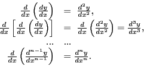
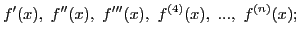
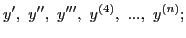
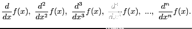

Next:
The -th derivative
Up:
Successive differentiation
Previous:
Definition of successive derivatives
Contents
Index
Notation
The symbols for the successive derivatives are usually abbreviated as follows:

If
, the successive derivatives are also denoted by

or

or,

david joyner 2008-08-11